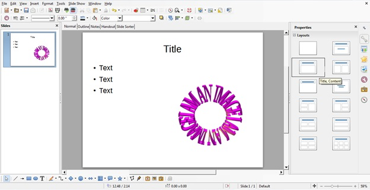
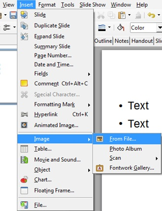
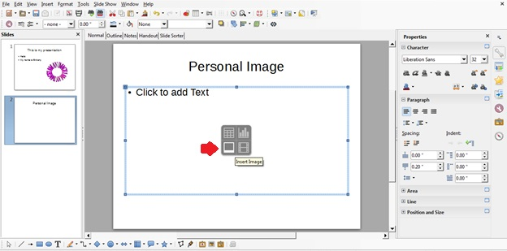
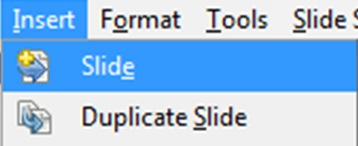

Create a presentation in LibreOffice using the presentation engine, Impress.
Pre-requisites
1 computer with LibreOffice
Steps
Open LibreOffice either from the Start menu or the desktop icon.
Using the menu bar on the left, select Impress Presentation.
NOTE: This will open a blank, untitled Impress screen in the Normal view.
Under File in the Menu toolbar, click Save As.... Enter the desired filename of your presentation and click Save.
Complete the title slide by clicking within Properties: Layouts and selecting the layout of the slide, then adding the appropriate title, text, or images (Figure 9).
NOTE: Remember to save frequently while you work by clicking File: Save.
Figure 1. Figure 9: Selecting an appropriate slide layout for the needed title, text, or images.

Add your own images by clicking Insert in the Main toolbar and selecting Image: From File.... Navigate to and select your desired image and click Open(Figure 10).
NOTE: This can also be done by using the shortcut Insert Image button within the content textbox (Figure 11).
Figure 2. Figure 10: Adding a personal image to a slide using the Main toolbar.
 Figure 3. Figure 11: Adding a personal image to a slide using the content button shortcut.

Add additional slides by clicking Insert in the Main toolbar and selecting Slide(Figure 12).
Figure 4. Figure 12: Adding a new slide using the main toolbar.

Complete the presentation using Properties: Layouts to select a slide layout for each slide and the Impress toolbars to format the slides.
View your presentation by clicking View in the Main toolbar and selecting Start from first Slide.
Upon completion, click File: Save to save your final presentation.
NOTE: The keyboard shortcut "Ctrl + S" can also be used.
Example
Using the Slide Sorter view, your presentation will look like this (Figure 13).